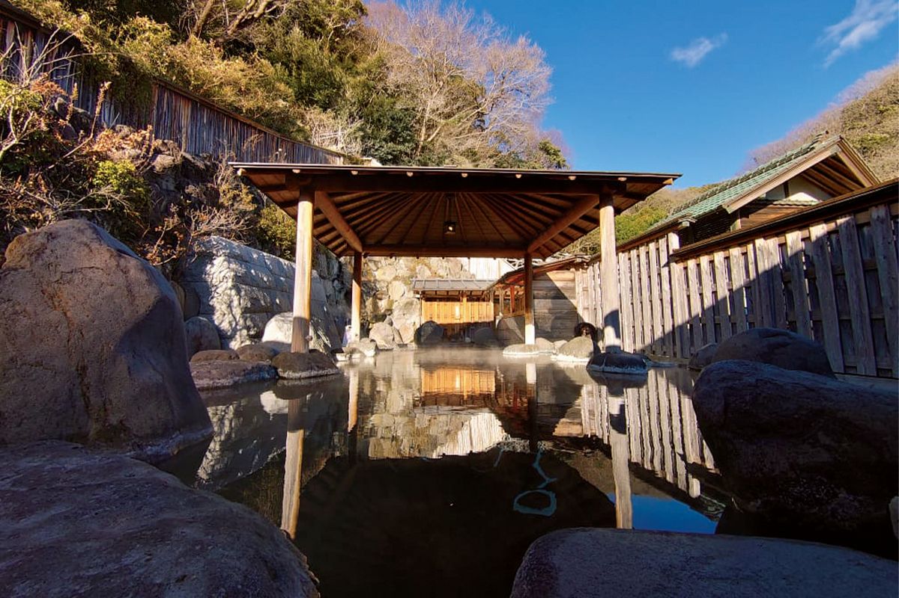
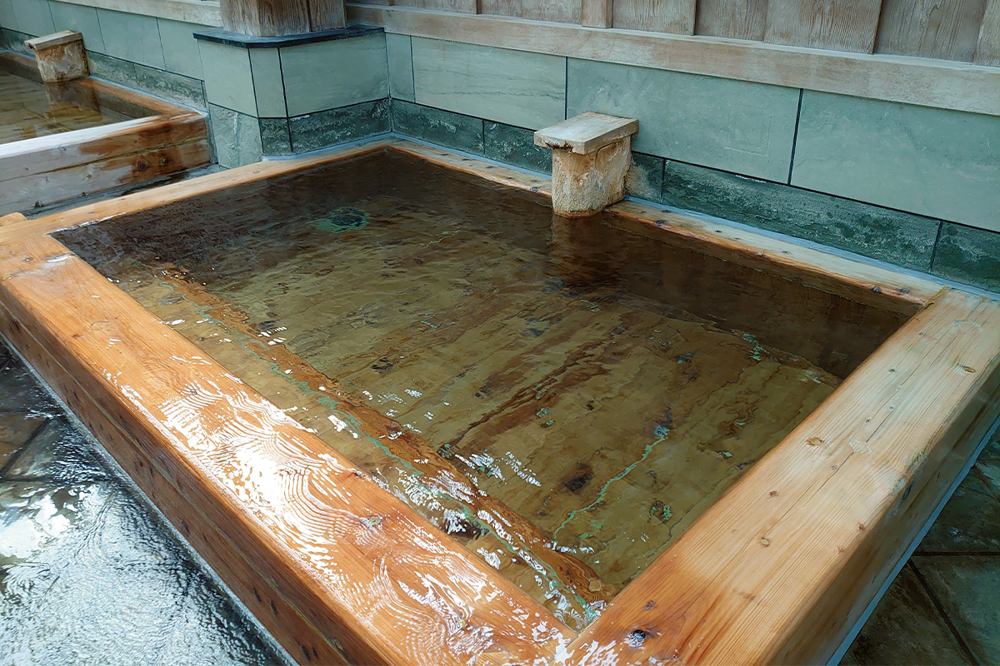
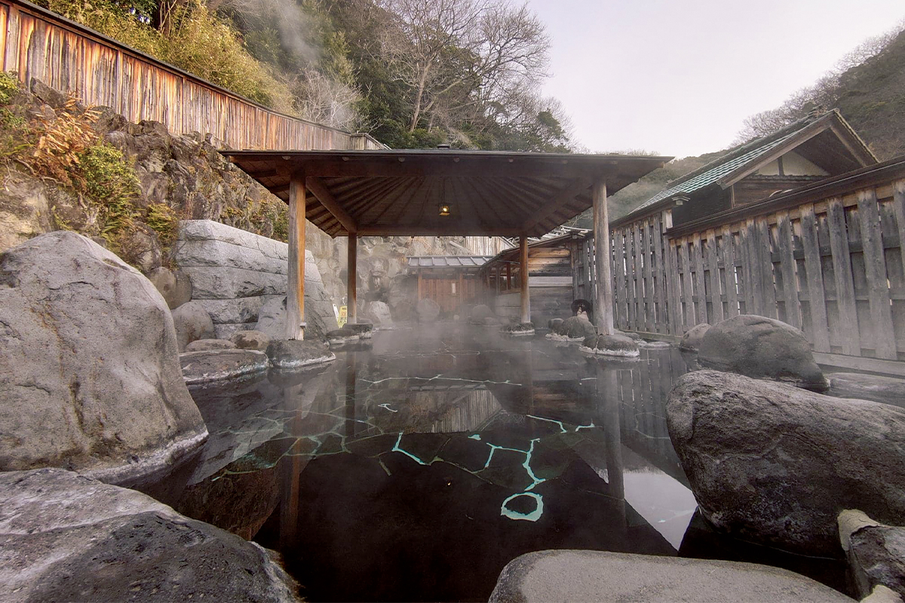
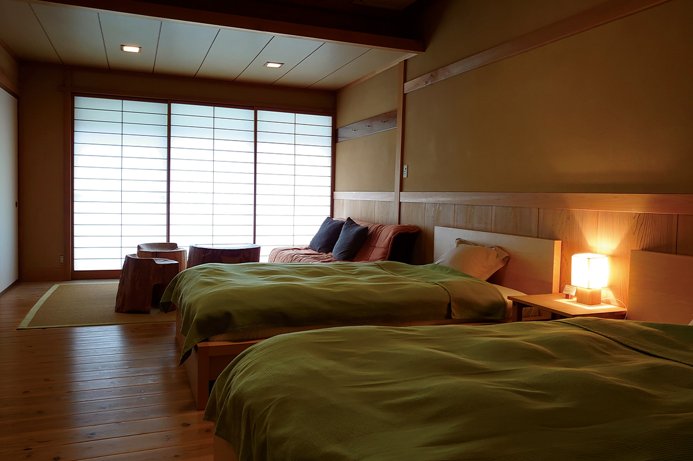
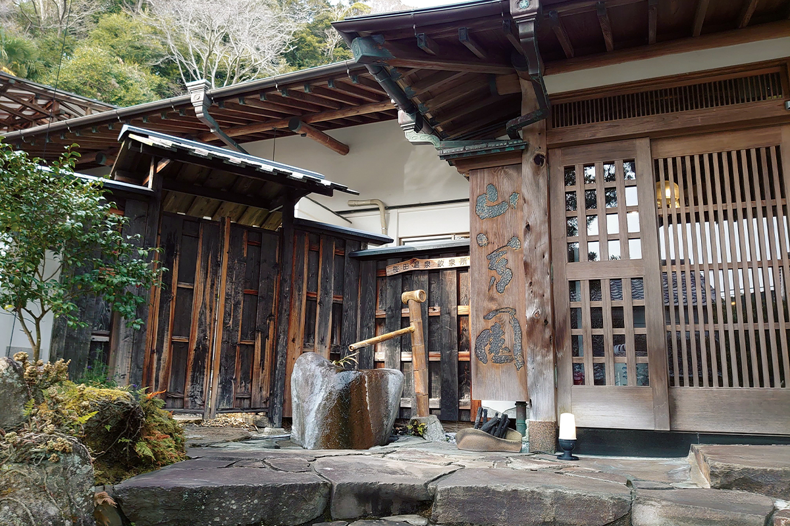

Префектура Сидзуока · Мацудзаки · онсэн
SANPOUEN на онсэне Сакурада: свежий источник прямо из-под земли и бассейн глубиной в метр

Бывают дни, когда хочется не бодрости, а покоя, чтобы кто-то просто пожалел и дал выдохнуть. Для таких дней исследовательница онсэнов советует рёкан SANPOUEN на онсэне Сакурада, на западе полуострова Идзу.
Вода
Источник прямо из-под земли
Онсэн Сакурада находится в городке Мацудзаки на западном побережье полуострова Идзу. Здешний рёкан SANPOUEN знаменит прежде всего тем, как в нём обращаются с водой.
Ценность горячего источника во многом зависит от того, как его используют. Свежая вода ощущается плотной и упругой, словно тебя крепко обнимают. Чтобы сохранить эти свойства, в SANPOUEN придумали собственный способ подачи, который называют «прямой связью с недрами». Только что поднявшуюся из скважины воду не держат на воздухе, не разбавляют холодной и не сбрасывают с неё давление. Как раз на этих трёх этапах источник обычно теряет силу. Вода выходит на поверхность с температурой 72 °C, её остужают за счёт испарения и в большом количестве сразу подают в купальни.
Состав у источника натриево-кальциевый сульфатный, вода щелочная. По ощущениям она будто бережно приводит в порядок каждую клетку тела.

Крытая купальня из японского кипариса хиноки устроена так, что вода поступает в неё со дна. Поверхность приподнимается, как при поверхностном натяжении, и вода широким потоком переливается через край. Стоит погрузиться в эту массу воды, и чувствуешь её тяжесть: упругая вода словно мягко выталкивает тебя обратно.
Купальни
Бассейн на двадцать татами
Главная гордость рёкана это большой открытый бассейн. Он тоже наполнен свежей водой из источника, без разбавления, и вода в нём постоянно обновляется. Бассейн бронируют бесплатно, поэтому на время его можно получить целиком в своё распоряжение.

Бассейн длиной 10 метров вмещает 31 тонну воды. Глубина в метр позволяет купаться стоя, и тело становится лёгким, почти невесомым. В такой воде хорошо просто стоять или медленно гулять из конца в конец.
Кроме того, в рёкане есть общие крытые купальни, отдельная купальня для семей и три номера с собственным онсэном. Купаться без ночёвки здесь нельзя.
Рёкан
Семейное гостеприимство
SANPOUEN держит одна семья, и тепло этого дома чувствуется и в еде. На столе сашими из рыбы, пойманной у западного берега Идзу, и целиком тушёный кинмэдай, золотоглазый берикс. Рис выращивают на собственном поле без пестицидов: сорняки на нём убирают утки, а урожай сушат на солнце. На десерт подают местные цитрусовые.

Ужин и завтрак накрывают в отдельных комнатах для трапез: вечером подают авторский японский ужин из нескольких блюд, утром японский завтрак. В 2022 году ночь с ужином и завтраком стоила от 18 700 иен с налогом и сервисным сбором. Одного гостя тоже примут, но бронировать нужно по телефону и за отдельную доплату.

SANPOUEN
- Адрес
- префектура Сидзуока, уезд Камо, Мацудзаки, Сакурада, 569-1
- Телефон
- +81 558-42-2561
- Цены / Вход
- ночь с ужином и завтраком от 18 700 иен (с налогом и сервисным сбором)
- Номера
- 10
- Заезд / выезд
- 15:00 / 10:00
- Выходные
- вторник и среда (бывают изменения из-за праздников)
- Как добраться
- на машине около 1 часа от съезда Цукигасэ скоростной дороги Идзу-Дзюкан; от станции Идзукю-Симода автобусом около 45 минут до остановки Сакурада, оттуда около 3 минут пешком